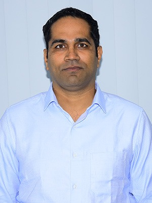

Dr Rajendra Kumar Varma
Associate Professor, Indian Institute of Technology Jammu — structural engineering, computational mechanics and advanced construction materials.
Bridging laboratory experiments and numerical models to make structures safer, lighter and longer-lasting — from fibre-reinforced and FRP-strengthened concrete to architected metamaterials, wind loads on hill terrain and precast pavements for mountain roads.

Dr Varma leads research at the meeting point of experimental testing and numerical simulation of concrete, composite and architected structures.
After a B.Tech at IIT Guwahati and seven years of research at the University of Minho, Portugal, culminating in a PhD, he spent five years designing bridges, metro and tunnel structures with COWI, Bechtel and Aarvee Associates — including projects in Denmark, Qatar and Venezuela. He joined IIT Jammu in 2017 and served as Head of the Department of Civil Engineering from 2018 to 2020. Alongside research and teaching, he advises government agencies and industry on the design, proof checking and testing of bridges and buildings across Jammu & Kashmir and India.
Full biography →Six connected research themes
Each theme combines laboratory testing, constitutive modelling and finite element analysis. Select a theme to read more.
Fibre-reinforced concrete
Constitutive behaviour and design of steel-fibre and self-compacting concretes.
Read more →FRP strengthening & cyclic RC behaviour
CFRP confinement, NSM strengthening and fibre-based models of RC frames.
Read more →Architected materials & metastructures
Lattices and graded metastructures designed with mechanics and machine learning.
Read more →Wave propagation & structural dynamics
Spectral element methods for micropolar-Cosserat periodic composite panels.
Read more →Wind engineering in hilly terrain
Wind-tunnel studies of hills, escarpments and buildings in mountain regions.
Read more →Precast prestressed pavements
Rapid, durable pavement panels for strategic roads in mountainous areas.
Read more →Recent news
- 2026New article in Composite Structures on machine-intelligence-driven anti-curvature metamaterials.
- Mar 2026Dr Bhargav Reddy Isanaka defends his PhD; now a Research Fellow at the University of Southampton, UK.
- Oct 2025Group research on structural imperfections in honeycomb lattices presented at IMPLAST 2025, IIT Roorkee.
- Jun 2024Work on lattice metamaterials presented at ECCOMAS 2024 (Lisbon) and EMI/PMC 2024 (Chicago).
- 2024Dr Abdul Haseeb Wani completes his PhD on wind effects on buildings in hilly terrain; joins MIET Jammu as Assistant Professor.
- Aug 2023Wind-tunnel research on steep escarpments presented at the 16th International Conference on Wind Engineering, Florence.
- 2023Dr Satyendra Kumar Singh completes his PhD on wave propagation in micropolar-Cosserat composite panels.
Engineering expertise for infrastructure
Structural design and assessment, bridge proof checking, finite element modelling and material testing for public agencies and industry.
Doctoral researchers & alumni
Meet current PhD scholars and alumni now at the University of Southampton, MIET Jammu and IIT Jammu — and find out how to join.